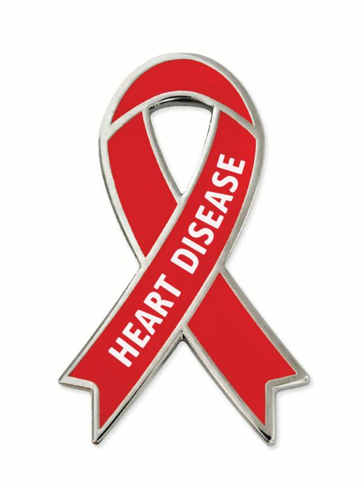
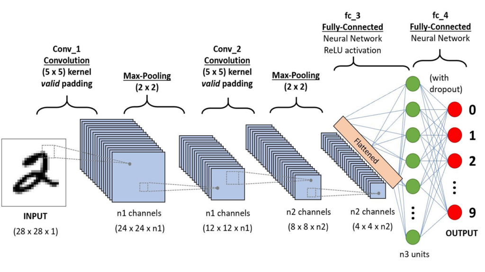

Health&Care is an all in one medical solution app which brings 7 Disease
Detections like Covid Detection, Brain Tumor Detection, Breast Cancer Detection, Alzheimer Detection,
Diabetes Detection, Pneumonia Detection, and Heart Disease Detection under one platform.
Disease Detections
Covid Detection

Heart Disease Detection

Overview Of The Project
So guys here comes one of the most advanced Machine Learning medical projects that I have done till now in my whole Machine Learning journey.
It is called Health&Care which is an all-in-one medical solution.
We know the future is all about AI so here is my idea of bringing 7 disease detections under one platform using the power of AI.
Although these results are perfect yet an experiment i did, which can prove to be a revolution in the coming years.
The main advantage of this project is that we can get the test results immediately at our home with a just few clicks.
A quick recap of Convolutional Neural Networks

A Convolutional Neural Network (ConvNet/CNN) is a Deep Learning algorithm that can take in an input image, assign importance (learnable weights and biases) to various aspects/objects in the image, and be able to differentiate one from the other.
The pre-processing required in a ConvNet is much lower as compared to other classification algorithms. While in primitive methods filters are hand-engineered, with enough training, ConvNets have the ability to learn these filters/characteristics.
The architecture of a ConvNet is analogous to that of the connectivity pattern of Neurons in the Human Brain and was inspired by the organization of the Visual Cortex.
A ConvNet is able to successfully capture the Spatial and Temporal dependencies in an image through the application of relevant filters.
The role of ConvNet is to reduce the images into a form that is easier to process, without losing features that are critical for getting a good prediction.
All Disease Detections
Covid-19 Detection
Used custom-made CNN architecture for this detection.
The accuracy achieved was around 93%
Brain Tumour detection
Used VGG-16 for feature extraction.
The accuracy achieved was around 99%(Just Tested on 10 Images)
Used custom-made CNN ahead of CNN.
Breast Cancer Detection
Used Random Forest for this use case.
The accuracy achieved was around 91%
Alzheimer Detection
Trained CNN architecture for this use case.
The accuracy achieved was around 73%
Diabetes detection
Used Random Forest for this use case.
The accuracy achieved was around 66%
Pneumonia Detection
Used custom CNN architecture for this use case.
The accuracy achieved was around 83%
Heart Disease Detection
Used XGBoost for this use case.
The accuracy achieved was around 86%
Future Scope
As time passes, i will be available with more and more data and i will try to make these models even more accurate by training on much more data.
Also, i will be adding more disease detections that can be detected using X-ray scans or just by inputting simple numbers.
I are also planning to add more features like if a person is found positive then the app will show him what precautions he needs to take and how he can cure himself.
I will also be storing the detection records.
So these are some future improvements/additions i plan to add.